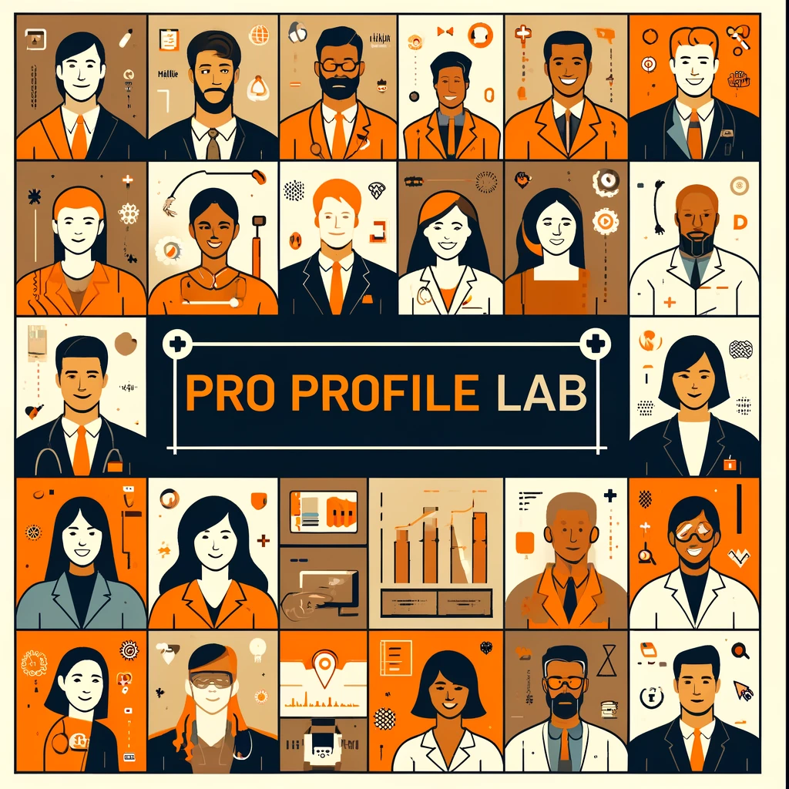
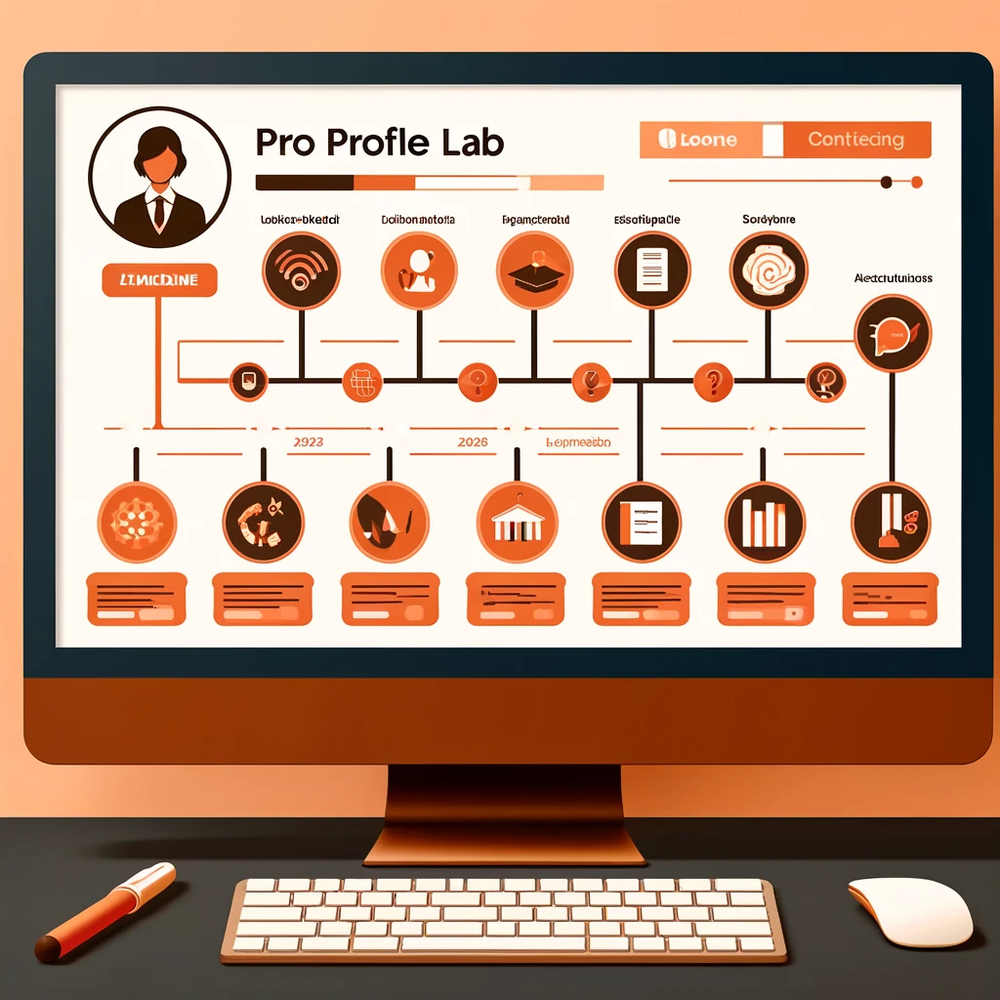

Welcome to Profile Pro Lab, where your professional journey transforms into a compelling story. Create a dynamic profile that not only showcases your skills but also highlights your unique professional experiences. Join us today and start crafting your personal brand that stands out!
Showcase your expertise with a customizable main profile page that captures your basic information, contact details, and professional highlights. Whether you’re a freelancer, a consultant, or an entrepreneur, Pro Profile Lab helps you create a profile that resonates with your audience and potential collaborators.
Engage and grow your network by sharing insightful posts and updates. Pin your favorite content to highlight what matters most to you and keep your network informed with your latest achievements and thoughts. Stay active, stay relevant!
Your experiences and milestones deserve recognition. Document your professional journey with detailed experiences and downloadable resumes directly from your profile. Profile Pro Lab makes it easy to organize and present your career path to prospective employers and partners.
